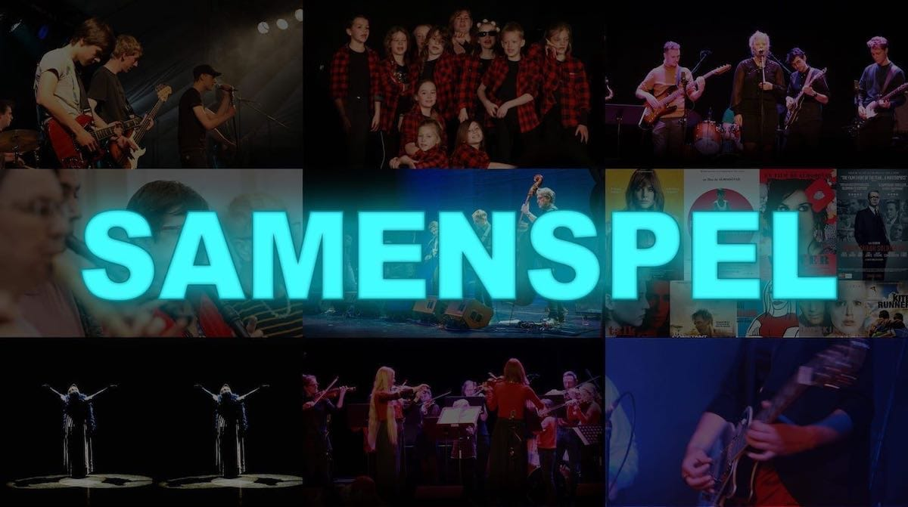

Spelen in groep kan zo geweldig zijn. Samen muziek maken, klanken die verweven in elkaar en jouw stem die mee de harmonie maakt, interactie met de andere muzikanten, via de muziek een sfeer creëren, voelen dat je in een groep een belangrijk onderdeel bent van het gebeuren, ... Dat gevoel is onbeschrijflijk.
In de Kunstfabriek hebben we heel uiteenlopende samenspelgroepen. Van kleine gemengde groepen over instrumenten-ensembles tot rock-bands. Ook kunnen bestaande groepen via bandcoaching begeleid worden.
Er zijn dit jaar enkele nieuwe samenspelgroepen. Onder voorbehoud van voldoende inschrijvingen worden deze opgericht: SOUL/FUNK - FOLK - FILM-muziek